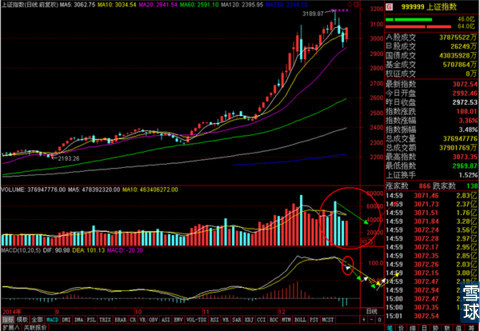
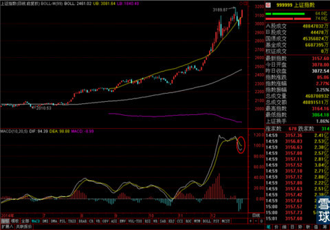
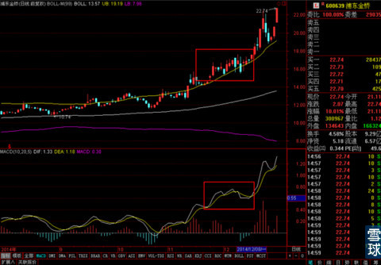
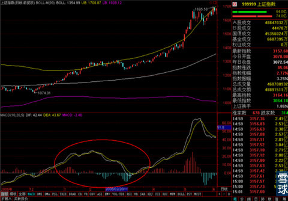
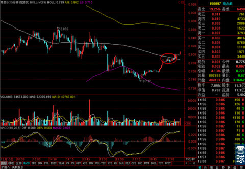
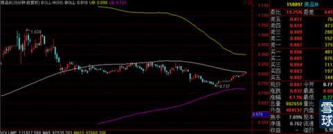
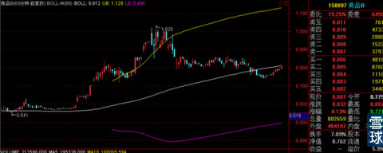

昨天贴了一张对今后一段时间走势的预测图，主要是针对MACD高位死叉后的一些经典走势进行套用，做出这样的判断。

注意下面MACD上的小红圈，我们再看一下今天大盘真正的走势。

可以说和预测的几乎一致，但是这样的话，大盘100%会按我预测的方式去运行么？
当然不是，这里是一个技术分析本质的问题。那就是技术分析的本质是概率统计，在大盘现在的指数点位和MACD走势的关系来看，概率最大的就是我画出来的那种。但是小概率的情况还有一种。

就是这样的，当MACD出现高位死叉的时候，由于股价处于BOLL上轨之外的超强势区域，加上大盘连续上涨的刺激。MACD白线强行翻越黄线，没有出现经典走势中，那种碰一下再下跌，下跌一段时候再回头碰一下黄线。直到0轴附近才结束调整的走势。
但是这种走势毕竟很少见，属于小概率情况，所以按照大盘现在的走势，我们不能把预判的结果过多放在这种走势上，而是暂时按照经典走势的情况来进行思考和判断。
例如这样的，

和大多数投资者想象中的不一样，很多投资者觉得顶背离之后应该是马上出现快速而明显的下跌。其实在实际中，有1/3左右的顶背离出现之后，尤其是股价强势上涨中途的顶背离都是这样走的。每次白线反弹去碰黄线的时候都一波小上涨，甚至在整个顶背离过程中还会出现创出新高的可能。但是只有MACD的黄白线运行到0轴附近再次出现金叉之后，这段震荡期才算完全结束。最后的下跌多出现在MACD加速靠近0轴的过程中。
对于近期的大盘，我们可以沿着这样的思路去进行判断。
同时这个事情也说明一点，一种技术指标的使用是很复杂的，很需要细致观察和归纳总结的。如果死记硬背顶背离看跌，底背离看涨。只能保证投资者不吃大亏。坚持顶背离卖出，底背离买入，可能成为我昨天说的那种“三板斧”型投资者，我不问为什么，也不在乎原理和细节。我就跑顶背离和底背离这组指标有效性的概率。不问对错，永远站在大概率事件的一边。
这也就是为什么有些投资类的书籍就这么简化的说明指标用法的原因。
但是想要成为优秀投资者，真正做到能预判，每一次动作都有自己的逻辑和道理，就必须要时时刻刻深入挖掘相关指标的细节和实践中的各类经典案例。
昨天还说了一点关于利用BOLL打短差的例子，

如果这次短差我做了的话，我估计我今天在连续三次价格接触BOLL中轨但是没有穿越的情况下，把剩下的仓位再减一半。不会彻底出清。
原因是30分钟线上BOLL中轨是接近水平的，

60分钟线上BOLL中轨是上扬的，之前的3/4仓位有了充分获利，留下一点底仓，搏一搏15分钟线中轨可以被穿越，同时大盘还不错，商品B的溢价也不是很高。

如果建仓资金是2万的话，最后底层可能是5000左右，多出来的2%盈利，也就是100块左右，正好够晚上出去请我家领导吃个晚饭的。
所以观察和操作计划是股票操作中的重要环节，有预判但是没有合理的计划，或者有计划不能好好执行，都是新手常犯的错误，这个应该尽量避免。
 |
昨天贴了一张对今后一段时间走势的SaiLv 2014-12-26 16:05:44 |
Copyright © 1996-2014 SINA Corporation All Rights Reserved.